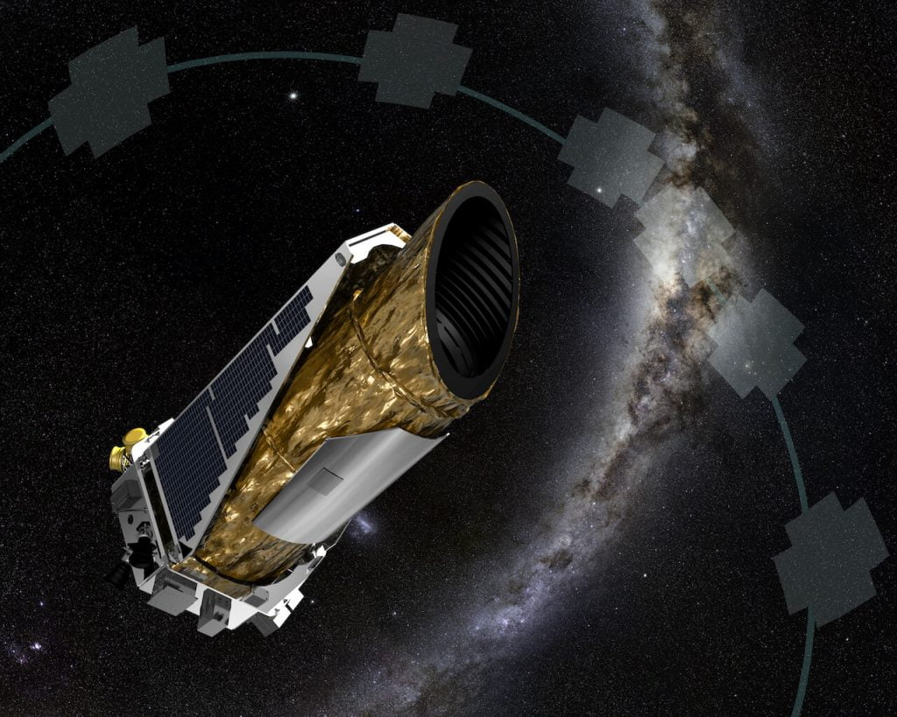
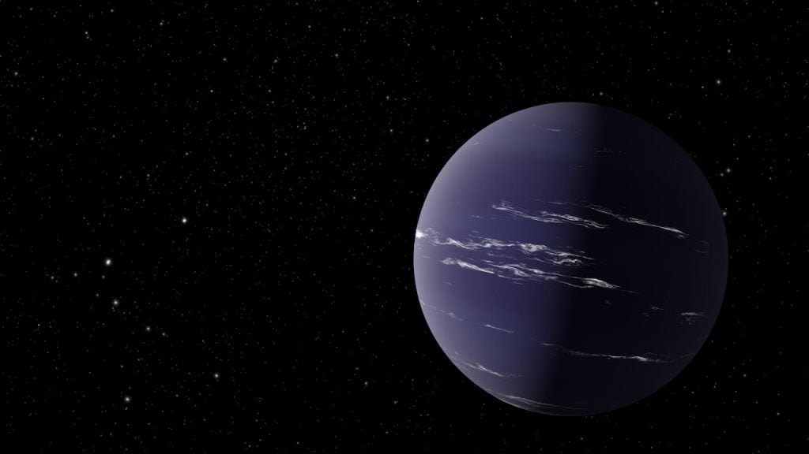

ဒီမေးခွန်းကို လူသားတွေ မေးလာခဲ့တာ နှစ်ထောင်ပေါင်း များစွာ ရှိခဲ့ပါပြီ။ ရှေးဟောင်း ဂရိခေတ်က ထင်ရှားခဲ့တဲ့ သင်္ချာပညာရှင်ကြီး မီထရိုဒိုးရပ်စ် (Metrodorus, 400-350 BC) က “ကမ္ဘာတစ်ခုထဲ ရှိတဲ့ စကြာဝဠာဆိုတာ ဂျုံပင် တစ်ပင်ထဲရှိတဲ့ ဂျုံခင်းကြီး လိုပဲ ယုံလောက်စရာ ကောင်းပါတယ်” လို့ ပြောခဲ့ဘူးပါတယ်။ (A universe where Earth is “the only world,” he said, is about as believable as a “large field containing a single stalk.)
သူ့နောက် နှစ်ပေါင်း ၂,၀၀၀ အကြာမှာ တော့ ၁၆ ရာစုရဲ့ ထင်ရှားတဲ့ အီတလီ တွေးခေါ်ပညာရှင်ကြီး ဂျီအိုဒါနို ဘရူနို (Giordano Bruno) က အောက်ပါအတိုင်း ပြောပါတယ်။
“မရေမတွက်နိုင်တဲ့ အနန္တ နေတွေနဲ့ အနန္တ ကမ္ဘာတွေ ရှိကြတယ်။ ကျွန်တော်တို့ ကမ္ဘာက နေကို လှည့်ပတ်နေ သလိုပဲ အဲ့သည် ကမ္ဘာတွေကလဲ သူတို့ရဲ့ နေတွေကို လှည့်ပတ်နေကြတယ်” လို့ ပြောခဲ့ပါတယ်။
ယခုခေတ်မှာတော့ သိပ္ပံပညာရှင်တွေဟာ မက်ထရို ဒိုးရပ်စ် နဲ့ ဂျီအိုဒါနို တို့ မှန်ကန်ကြောင်း သိရှိနေကြပါပြီ။ ယခုခေတ် သိပ္ပံပညာရှင်တွေ ဟာ ခေတ်မှီနည်းလမ်းတွေကို အသုံးပြုပြီး နေအဖွဲ့အစည်းရဲ့ အပြင်ဖက်က ကြယ်တွေမှာ ရှိနေတဲ့ ဂြိုလ်တွေကို ရှာဖွေ စူးစမ်း လေ့လာနေ ကြပြီ ဖြစ်ပါတယ်။
Exoplanets (နေအဖွဲ့အစည်း ပြင်ပဂြိုလ်များ)
ယခုအခါမှာတော့ နေအဖွဲ့အစည်းရဲ့ ပြင်ပက ကြယ်တွေမှာ ပတ်နေကြတဲ့ ဂြိုလ်တွေ ရှိနေပြီဆိုတာ ငြင်းမရနိုင်တဲ့ သိပ္ပံနည်းကျ အထောက်အထားတွေ ရရှိထားပြီး ဖြစ်ပါတယ်။ အဓိကကတော့ နာဆာ (NASA) အဖွဲ့ကြီးက လွှတ်တင်ခဲ့တဲ့ ကက်ပလာ နက္ခတ်တာရာကြည့် မှန်ပြောင်းကြီးကြောင့်ပဲ ဖြစ်ပါတယ်။ ဒီ ကက်ပလာ (Kepler Space Telescope) မှန်ပြောင်းကြီးကို ၂၀၀၉ ခုနှစ်က အမေရိကန် ပြည်ထောင်စုက လွှတ်တင်ခဲ့တာ ဖြစ်ပါတယ်။ နှစ်ပေါင်း ၄ နှစ်တိုင်တိုင် ဒီ မှန်ပြောင်းကြီးကို ဆစ်ဂနပ် တာရာ (Cygnus constellation) ထဲမှာ ရှိနေတဲ့ ဒေသ တစ်ခုကို အချိန်ပြည့် ချိန်ထားပြီး စောင့်ကြည့်နေခဲ့ကြပါတယ်။ ကမ္ဘာမြေက ကြည့်မယ် ဆိုရင်တော့ ဒီမှန်ပြောင်းကြီး ၄ နှစ်လုံးလုံး ကြည့်နေခဲ့တဲ့ နေရာဟာ ကောင်းကင်ပြင် တစ်ခုလုံးရဲ့ တစ် ရာခိုင်နှုန်းပဲ ရှိတဲ့ နေရာလေးပါ။
ကက်ပလာ မှန်ပြောင်းကြီး ဘယ်လို အလုပ်လုပ်လဲ
ကက်ပလာ မှန်ပြောင်းကြီး ပေါ်မှာ ကင်မရာပေါင်း ၄၂ လုံး ပါပါတယ်။ အဲ့သည် ၄ နှစ် ကြည့်နေခဲ့တဲ့ နေရာလေးမှာ ကြယ်ပေါင်း အလုံး ၁၅၀,၀၀၀ လောက် ရှိနေတာပါ။ နာရီဝက်တစ်ခါ ဒီကြယ်တွေကနေ လာတဲ့ အလင်းရောင်ရဲ့ အင်အားကို စောင့်ကြည့်မှတ်တမ်းတင် ဓါတ်ပုံ ရိုက်ယူပါတယ်။မြေပြင်ပေါ်မှာ ရှိနေတဲ့ နက္ခတ္တ ပညာရှင်တွေက ဒီ Kepler ကနေ ပို့ပေးတဲ့ ဓါတ်ပုံတွေကို အသေးစိတ် လေ့လာ ကြပါတယ်။ ကြယ်အများစုကတော့ သူတို့ထုတ်လွှတ်တဲ့ အလင်းရောင်က ပြောင်းလဲမှု မရှိကြပါဘူး။ ဒါပေမယ့် အဲ့ဒီ ကြယ် ၁၅၀,၀၀၀ မှာ ၃,၀၀၀ လောက်ကတော့ သူတို့ရဲ့ ထုတ်လွှတ်နေတဲ့ အလင်းရောင်က တချက်တချက်မှာ မှိန်မှိန်သွားပါတယ်။ မှိန်သွားတာက နည်းနည်းလေးပါ။ ဒီလို မှိန်သွားတာကလဲ တစ်ခါ မှိန်ရင် နာရီအတော် ကြာပါတယ်။ ဒီလို မှိန်သွားတာကလဲ အချိန်မှန် ဖြစ်ပေါ်လေ့ ရှိတာပါ။
နက္ခတ် ပညာရှင်တွေက ဒီလို အရောင်မှိန်သွား ရတာဟာ အဲ့သည် ကြယ်ကို ပတ်နေတဲ့ ဂြိလ်က ကြယ်နဲ့ မှန်ပြောင်းကြားထဲ ရောက်လာတာမို့ ထွက်လာတဲ့ အလင်းရောင် အချိုကို ကြားက ပိတ်ကာလိုက်သလို ဖြစ်ပြီး အရောင် မှိတ်သွားရတာ ဖြစ်တယ်လို့ ကောက်ချက်ဆွဲကြပါတယ်။
ဒီလို ဂြိုလ်က သူပတ်နေတဲ့ ကြယ်ရဲ့ အရှေ့ကနေ ဖြတ်ပျံတဲ့ ဖြစ်စဉ်ကို “အကူးအပြောင်း (Transit)” လို့ နာမည်ပေးထားပါတယ်။
အဲ့သည် နေရာလေး ကွက်ကွက်ထဲမှာတင် ကက်ပလာ တယ်လီစကုပ်ဟာ ဂြိုလ်တွေ ရှိနေနိုင်တဲ့ ကြယ်ပေါင်း အလုံး ၃,၀၀၀ လောက်ကို ရှာဖွေ ဖော်ထုတ် ပေးနိုင်ခဲ့ပါတယ်။
ဒါက အစပဲ ရှိပါသေးတယ်
ဂြိုလ်ရှိတဲ့ ကြယ် ၃,၀၀၀ ဆိုတာ အများကြီးပဲလို့ ထင်စရာ ရှိနေပါတယ်။ ဒါပေမယ့် တကယ်တော့ ဒီနေရာ လေးတင်ကို ကျွန်တော်တို့ ရှာမတွေ့သေးတဲ့ ဂြိုလ်ပေါင်း အမြောက်အများ ရှိနေအုံးမှာပါ။ ဒီလိုဖြစ်ရတာက ဒီ (ရှာမတွေ့တဲ့) ဂြိုလ်တွေရဲ့ ကြယ်ပတ်လမ်းက ကျွန်တော်တို့ တယ်လီစကုပ်ကြီးနဲ့ ကြယ်ရဲ့ကြားထဲ ရောက်မလာလို့ ဖြစ်ပါတယ်။ ဂြိုလ်တွေရဲ့ ပါတ်လမ်းက အားလုံး အတူတူ ရှိကြတာ မဟုတ်ပါဘူး။ သူတို့ ပတ်ချင်တဲ့ လမ်းကနေ ပတ်နေကြတာပါ။ဒါပေမယ့် ဒီ ရှာတွေ့တဲ့ ၃,၀၀၀ ဆိုတဲ့ အရေအတွက်နဲ့ ကျွန်တော်တို့ စကြာဝဠာနဲ့ ပါတ်သက်လို့ သိထားသမျှ အချက်အလက်တွေနဲ့ ထည့်သွင်းစဉ်းစားမယ်ဆိုရင် အဲ့သည် ဒေသမှာ ရှိနေနိုင်တဲံ ဂြိုလ်အရေအတွက်ကို အနီးစပ်ဆုံး ခန့်မှန်းနိုင်မှာ ဖြစ်ပါတယ်။
တွက်ချက်မှုတွေ ပြုလုပ်အပြီးမှာတော့ ပညာရှင်တွေက “စကြာဝဠာထဲက ကြယ်တိုင်းလိုလိုမှာ ပြမ်းမျှ ဂြိုလ်တစ်လုံးစီတော့ အနည်းဆုံး ရှိကြတယ်” လို့ ပြောပါတယ်။
ကြယ်ပေါင်း သန်း တစ်သောင်း၊ ဂြိုလ်ပေါင်း သန်း တစ်သောင်း
ကျွန်တော်တို့ရဲ့ နဂါးငွေ့တန်းခေါ် မစ်ကီးဝေး (Milky Way Galaxy) ဂလက်ဆီ ကြီးထဲမှာ စုစုပေါင်း ကြယ် အလုံး သန်း တစ်သောင်းခန့် (ဘီလီယံ ၁၀၀ ခန့်) ရှိမယ်လို့ ခန့်မှန်းပါတယ်။ကျွန်တော်တို့ရဲ့ စကြာဝဠာကြီးထဲမှာ ဒီ နဂါးငွေ့တန်းလို ဂလက်ဆီ ကြယ်စုကြီးပေါင်း ၂ ထရီလီယံ (သန်းပေါင်း တစ်သန်း) ခန့်ရှိမယ်လို့ ခန့်မှန်းပါတယ်။ ဂဏန်းနဲ့ ရေးပြရင်တော့ ၂,၀၀၀,၀၀၀,၀၀၀,၀၀၀ ရှိပါတယ်။ ဒါက ဂလက်ဆီ အရေးအတွက်ပဲ ရှိပါသေးတယ်။ ဒီ ဂလက်ဆီ တိုင်းမှာလဲ ကြယ်အရေအတွက်က ဘီလီယံ ပေါင်းရာချီ ရှိနေနိုင်ပါတယ်။ (၁ ဘီလီယံ = ၁,၀၀၀,၀၀၀,၀၀၀) ပါ။ ပြောရရင်တော့ စကြာဝဠာကြီးထဲမှာ ရှိနေတဲ့ ကြယ်အရေအတွက်ဟာ ရေတွက်ဖို့ လွယ်ကူခြင်း မရှိလောက်အောင်ကို များပြားလှပါတယ်။ ကမ္ဘာပေါ်မှာ ရှိတဲ့ ပင်လမ်းကမ်းခြေတွေက သဲမှုန်တွေ အားလုံးပေါင်း လောက်ကို များပါတယ်လို့ သိပ္ပံ ပညာရှင်တွေက တင်စား ပြောလေ့ ရှိကြပါတယ်။

ဒီ ကက်ပလာ မှန်ပြောင်းကြီးက ဓါတ်ပုံတွေကို သုတေသန ပြုတဲ့ ပညာရှင်တွေကတော့ ကမ္ဘာနဲ့ တူတဲ့ ဂြိုလ်တွေ ရှိနေနိုင်တဲ့ “သက်ရှိတို့ နေထိုင်နိုင်သော ရပ်ဝန်း (Habitable Zone)” မှာ ရှိနေတဲ့ ဂြိုလ်တွေ အရေအတွက်ကို တွက်ချက်ထားပါတယ်။ သူတို့ရဲ့ တွက်ချက်မှုအရ ကျွန်တော်တို့ မစ်ကီးဝေး ဂလက်ဆီ ကြီးထဲမှာတင် နေနဲ့ အလားတူတဲ့ ကြယ်တွေရဲ့ ထက်ဝက်လောက်မှာ ဒီ habitable zone မှာ ဂြိုလ်တွေ ရှိနေမယ် လို့ ခန့်မှန်းထားကြပါတယ်။
ကမ္ဘာပြင်ပမှာ အသက်ဇီဝ ရှိနိုင်သလား
ယခုအချိန်ထိတော့ သိပ္ပံပညာရှင်တွေဟာ ကမ္ဘာ့ပြင်ပမှာ အသက်ဇီဝ ရှိနေတယ် ဆိုတဲ့ အထောက်အထား ရှာမတွေ့ သေးပါဘူး။ ဒါပေမယ့် သိပ္ပံ ပညာရှင် အများစုကတော့ ဒီလောက်ကြီးတဲ့ စကြာဝဠာကြီးထဲမှာ ကမ္ဘာတစ်ခုထဲ အသက်ဇီဝ ဖြစ်ထွန်းတယ် ဆိုတာက မဖြစ်နိုင်ဘူးလို့ ယူဆကြပါတယ်။ဒါဆို ကျွန်တော်တို့ လူသားတွေ ဘယ်တော့လောက် အခြားကမ္ဘာက အသက်ဇီဝတွေကို ရှာဖွေ ဖော်ထုတ် တွေ့ရှိနိုင်မှာပါလဲ။ အဲ့ဒီ အသက်ဇီဝတွေကရော လူသားတွေလို အဆင့်မြင့် ဉာဏ်ရည်ရှိတဲ့ သူတွေ ဖြစ်ကြမလား။ ပြင်ပကမ္ဘာက သက်ရှိတွေ ဆီကနေ ဘယ်တော့လောက်များ သတင်းအချက်အလက်တွေ လက်ခံရရှိနိုင်ကြမှာလဲ။
လက်ရှိအချိန်မှာတော့ ကမ္ဘာတဝန်းက ပညာရှင်တွေက ဒီမေးခွန်းတွေရဲ့ အဖြေကိုရဖို့ ကြိုးပမ်းအားထုတ် နေကြပါတယ်။
Reference: Are there any planets outside of our solar system?